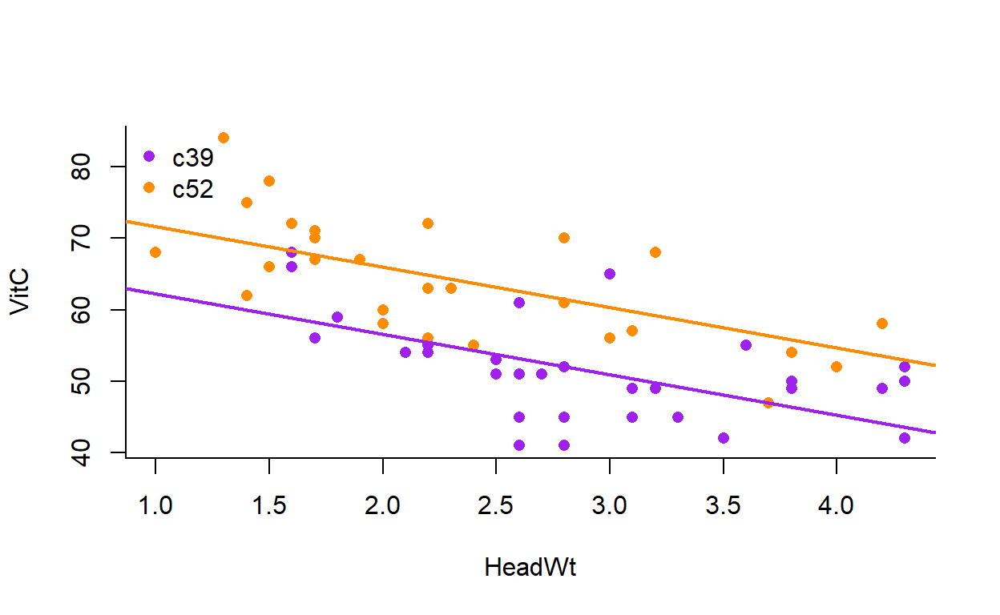
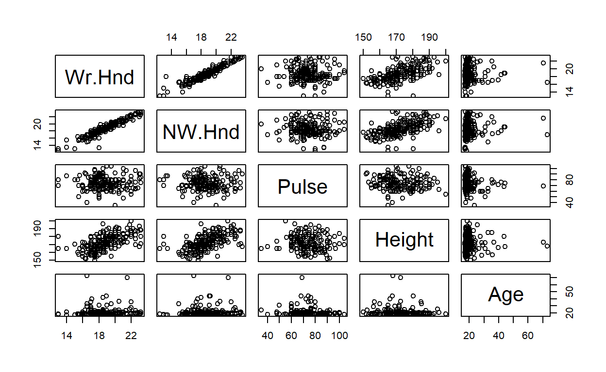

This tutorial will look at how to choose the best statistical model for your data, focussing on multiple linear regressions with two predictor variables and one continuous response variable.
The tutorial assumes that you know how to do simple and multiple linear regressions in R using lm and basic plotting. If not, revise these concepts or try another tutorial first.
The aim of statistical modelling is to find a model that best describes your data
Usually by explaining as much variation in \(Y\) as possible and attributing that variation to \(X_i\), where \(i\) is any number of predictor variables, categorical or continuous. Thus, we minimise residual variation, \(\varepsilon\).
One way to explain more variation is to add more predictor variables. But we cannot explain all natural random variation because we cannot fully control nature. And you can have too many predictor variables. We risk over-fitting the model and losing inference.
So, we need to choose the best model that can compromise between how much variation is explained and the utility or power to make inferences with the model. This is the philosophical basis of model selection:
Parsimony: Explain the most variation in \(Y\) using the fewest terms (variables) possible
Thus, we aim to select the most parsimonious model for a dataset.
We can describe models by how many terms (\(\beta\)) they have. Look at these three models:
\[ Y = \beta_0 + \beta_1 X_1 + \beta_2 X_2 + \beta_3 X_1 X_2 + \varepsilon \] \[ Y = \beta_0 + \beta_1 X_1 + \beta_2 X_2 + \varepsilon \] \[ Y = \beta_0 + \beta_1 X_1 + \varepsilon \]
They all have different number of \(\beta\) coefficients, thus they provide different descriptions of variation in \(Y\).
\(\beta\) coefficients describe the additional variation attributed to each term in the model. Together they describe the cumulative variation explained by the model. In combination with \(\varepsilon\), they describe the total variation in \(Y\), both explained and unexplained.
The first model has two predictor variables \(X_1\) and \(X_2\) and their respective coefficients \(\beta_1\) and \(\beta_2\) describe the additive effect of each predictor variable relative to the grand intercept \(\beta_0\). The fourth term \(\beta_3\) describes the additional effect of the interaction between \(X_1\) and \(X_2\). In other words, how much \(X_1\) and \(X_2\) influence each other’s effect on \(Y\).
This first model has all the possible combination of terms for a multiple regression including the interaction. Thus, this model is called a full model.
\[ Y = \beta_0 + \beta_1 X_1 + \beta_2 X_2 + \beta_3 X_1 X_2 + \varepsilon \]
The second model has all the terms as the full model except the interaction, \(\beta_3\). Thus this model is saying that the effect of \(X_1\) and \(X_2\) are independent of each other’s effect on \(Y\). This is an additive model that is reduced compared with the full model.
\[ Y = \beta_0 + \beta_1 X_1 + \beta_2 X_2 + \varepsilon \]
Reduced models have fewer terms than a full model, which has all possible terms
The third model is more reduced than the additive model. It has only one predictor variable, so it has only two terms in the model: the slope and the intercept. This is a simple linear regression.
\[ Y = \beta_0 + \beta_1 X_1 + \varepsilon \]
We don’t choose models solely on the number of terms.
Just because the additive or the simple linear regression has fewer terms than the full model does not mean it is the best choice to describe a given dataset.
We still need to evaluate how much variation is explained by each model then decide which of the three possibilities gives us our best bang for our buck, so to speak.
A simple way of seeing whether a model coefficient is informative is evaluating the question “Does the model coefficient explain significant variation in \(Y\) compared to it’s absence?”.
If a coefficient explains a significant amount of variation, then it can be kept in the model.
If a coefficient does not explain a significant amount of variation, then it can be removed from the model. This is called dropping terms.
We can keep dropping non-significant terms starting from the full model until we get the most parsimonious model.
How do we evaluate how much variation is explained by each coefficient? A statistical test on whether the additional effect of the coefficient on the overall slope or the intercept of the model is greater than 0. This is exactly the same as hypothesis testing.
This is not the most sophisticated way of selecting significant predictor variables but it demonstrates parsimony in action which forms the basis of model selection.
The one sample t-test on the additional effect of a \(\beta\) coefficient on \(Y\) tests the following hypotheses:
If the P value of the t-test is less than 0.05 then we can reject the null hypothesis and conclude that the model coefficient contributes significant explanatory value and so should be retained in the model.
The results of the t-tests can be viewed by calling summary on our linear regression.
Let’s look at an example dataset cats in the package MASS. The package is loaded for you. This is a dataset of the heart and body size of male and female cats. There are three variables:
Hwt: Heart weight, numericBwt: Body weight, numericSex: Sex (Male or Female), categorical (factor)'data.frame': 144 obs. of 3 variables:
$ Sex: Factor w/ 2 levels "F","M": 1 1 1 1 1 1 1 1 1 1 ...
$ Bwt: num 2 2 2 2.1 2.1 2.1 2.1 2.1 2.1 2.1 ...
$ Hwt: num 7 7.4 9.5 7.2 7.3 7.6 8.1 8.2 8.3 8.5 ...We can ask the question “Is the full model with an interaction more parsimonious than an additive model without an interaction?”.
This is the same as asking “Do male and female cats have different relationships between heart weight (response) and body weight (predictor)?”.
If the t-test on the \(\beta_3\) coefficient is non-significant in the full model, then the interaction term \(\beta_3\) does not explain a significant amount of variation and can be dropped. The model with the next fewest terms is the additive model. Thus, the additive model is more parsimonious.
This means each regression line for Sex is parallel:
A reduced additive model
In contrast, if the full model is more parsimonious, then the t-test on the \(\beta_3\) coefficient should be significant. The regression lines should then have different slopes and intercepts:
The full interactive model
We drop one non-significant coefficient at a time starting with any interactions then with predictor variables.
We cannot remove the effect of one predictor while keeping its interaction in the model (Can’t have an interaction without the additive effect). But we can have the independent additive effect of each predictor without interactions.
In R, the order of variables is important because that is the order that R will partition variance in \(Y\). For categorical predictors, R will assign variation in alphabetical order by default, unless you have specified an order (levels of a factor).
So in the cats dataset, variation attributed to female cats gets partitioned first, then males. Thus \(\beta_0\) and \(\beta_1\) refers to female cats.
In summary, R will show each of the consecutive \(\beta\) coefficients in the order it was given, starting with \(\beta_0\). Thus, each line in the coefficients table corresponds to a \(\beta\) coefficient. Which makes it easy to parameterise the model.
Remember the general formula for a full multiple linear regression is lm(Y ~ X1 * X2, data) where * indicates an interaction between the predictor variables and + indicates no interaction.
cats dataset with heart weight as the response variable and body weight and sex as the predictor variables within the summary function
summary()Hwt is Heart weight. Bwt is Body weight. Sex is sex. The name of the dataset is cats.the general formula for two predictor variables is lm(Y ~ X1 * X2, data)
Do we need a * or a +?Now, we can look at the t-test on the interaction \(\beta_3\) to see whether or not we can drop the interaction and choose the additive model as the more parsimonious model.
cats conclusionSince the interaction was significant, the interaction becomes the main conclusion of our analyses and the full model is the most parsimonious model.
We can see a strong interaction in the regression lines of the full model:
The full interactive model
The final model is:
\[ Heart weight = \beta_0 + \beta_1 Body weight + \beta_2 Sex_{Male} + \beta_3 Body weight Sex_{Male} + \varepsilon \]
\[ Heart weight = 2.98 + 2.64Body weight - 4.17 Sex_{Male} + 1.68 Body weight Sex_{Male} + \varepsilon \]
Let’s try another example.
cabbagescabbages is an dataset in MASS describing the Vitamin C (VitC) content of two varieties (cultivars) of cabbages (Cult) and the size of the cabbage (HeadWt).
'data.frame': 60 obs. of 4 variables:
$ Cult : Factor w/ 2 levels "c39","c52": 1 1 1 1 1 1 1 1 1 1 ...
$ Date : Factor w/ 3 levels "d16","d20","d21": 1 1 1 1 1 1 1 1 1 1 ...
$ HeadWt: num 2.5 2.2 3.1 4.3 2.5 4.3 3.8 4.3 1.7 3.1 ...
$ VitC : int 51 55 45 42 53 50 50 52 56 49 ...Let’s use VitC as the response variable, HeadWt as the first predictor variable and Cult as the second predictor variable. The structure of the dataset is the same as cats.
cabbages dataset
It's the same as we did for cats but with different variable namesHeadWt:Cultc52 is the estimated value of \(\beta_3\), the interaction.
OK! The interaction is not significant so we can drop the interaction term \(\beta_3\).
Since the full model was not the most parsimonious, we won’t use the rest of the information to make our final conclusions and hypothesis tests about the dataset.
We need to re-do our analysis with the reduced additive model to get our final conclusions we report on.
Get the summary of the additive linear regression for thecabbages dataset. VitC is the response variable, HeadWt is the first predictor variable and Cult is the second predictor variable.
It's the same as we did for the full model but with a different notation for no interactionShould the relationship between our predictors be * or +?We drop coefficient sequentially in reverse order that they are used to partition variation. The next coefficient to be dropped in \(\beta_2\) to remove the effect of the second predictor variable and choose a simple linear regression, instead of a multiple linear regression.
In this case, the additive model is the most parsimonious. The model is:
\[ Vitamin C = \beta_0 + \beta_1 Weight + \beta_2 Cultivar + \varepsilon \] \[ Vitamin C = 67.93 - 5.65 Weight + 9.36 Cultivar + \varepsilon \]
Let’s plot the additive model and the regression line.
The code below is the code to plot the additive model graph forcats seen before, including the parameterised regression lines. Modify the code to plot the additive model for cabbages.
# Main empty plot
plot(Hwt ~ Bwt, cats, bty = "l", type = "n")
# Points for female cats
points(Hwt ~ Bwt, cats[cats$Sex == "F",], pch = 16, col = "purple")
# Points for male cats
points(Hwt ~ Bwt, cats[cats$Sex == "M",], pch = 16, col = "darkorange")
# Regression for female cats
abline(a = -0.4149, b = 4.0758, lwd = 2, col = "purple")
# Regression for male cats
abline(-0.4149-0.082, 4.0758 , lwd = 2, col = "darkorange")
# Add a legend
legend(x = "topleft", bty = "n", legend = c("Female", "Male"), col = c("purple", "darkorange"), pch = c(16, 16))You don't need to change the structure of the code.
Just change the R object names and the column names.
You can also change the aesthetics if you'd likeVitC is the response variable
HeadWt is the first predictor variable
Cult is the second predictor variableCult has two sub-groups (levels): "c39" or "c52" that need to be plotted separatelyMake sure to replace the abline with the correct values for the slope and the intercept from the summary of the linear regressionIf you’ve got it, the graph should look like this:

There’s a negative relationship between the size of the cabbage and the Vitamin C content.
Eat your greens
Let’s try a final example of dropping a predictor variable.
Nitrogen, phosphorous and potassium are three important nutrients for the healthy growth of plants. They are the main components of most fertilisers. npk is a dataset describing the yield of plants within a plot given all possible combinations of nitrogen (N), phosphorus (P) or potassium (K), coded as absent (0) or present (1).
The function is strLet’s look at the full model:
summary(lm(yield ~ N * P * K, npk))
Call:
lm(formula = yield ~ N * P * K, data = npk)
Residuals:
Min 1Q Median 3Q Max
-10.133 -4.133 1.250 3.125 8.467
Coefficients:
Estimate Std. Error t value Pr(>|t|)
(Intercept) 51.4333 3.2002 16.072 2.7e-11 ***
N1 12.3333 4.5258 2.725 0.015 *
P1 2.9000 4.5258 0.641 0.531
K1 0.5667 4.5258 0.125 0.902
N1:P1 -8.7333 6.4004 -1.365 0.191
N1:K1 -9.6667 6.4004 -1.510 0.150
P1:K1 -4.4000 6.4004 -0.687 0.502
N1:P1:K1 9.9333 9.0515 1.097 0.289
---
Signif. codes: 0 '***' 0.001 '**' 0.01 '*' 0.05 '.' 0.1 ' ' 1
Residual standard error: 5.543 on 16 degrees of freedom
Multiple R-squared: 0.4391, Adjusted R-squared: 0.1937
F-statistic: 1.789 on 7 and 16 DF, p-value: 0.1586Now we have a multiple linear regression with three predictor variables! We have a lot of \(\beta\) coefficients describing their independent additive effects on plot yield, the pairwise combination of each predictor, as well as the interaction between all three variables (N1:P1:K1).
Don’t worry! The interpretation of these coefficients is exactly the same as with two predictor variables. In fact, it doesn’t matter how many predictor variables there are or whether they are continuous or categorical, the interpretation is the same.
Importantly, we can look at the one sample t-test and start evaluating whether we can drop coefficients to find the most parsimonious model.
Remember we need to drop the terms in order of complexity and in reverse order they are entered into the model:
A quick way of removing a single interaction from a linear model is to include - term into the lm function.
In fact, lm(Y ~ X1 * X2, data) is the shorthand way of writing the full formula lm(Y ~ X1 + X2 + X1:X2, data) where X1:X2 is the interaction term because * means “all possible combinations” (a factorial cross to use the technical term). Either way gives the same output in R.
Thus writing lm(Y ~ X1 + X2 + X1:X2 - X1:X2, data) to remove the interaction is the same as the additive model lm(Y ~ X1 + X2, data), but is also pretty redundant coding.
yield ~ N * P * K, npkLook at the P values on t-test of the two-way interactions. Are any of them significant?
Only the intercept \(\beta_0\) and the independent effect of Nitrogen \(\beta_1\) is significant. None of the other interactions are.
In the end, none of the interactions explain significant amounts of variation so we can drop all interactions from the model. We are then left with the additive model.
Change the full model below to look at the summary of the additive model.summary(lm(yield ~ N * P * K, npk))Should the * be * or something else?Now we have four coefficients describing the independent and additive effect of each nutrient on the yield of plants. Do any of them explain significant amounts of variation in the model?
We can conclude that there is no effect of Phosphorous or Potassium on the yield of plants. We can certainly remove Potassium as a predictor variable. Now we have two predictor variables: Nitrogen and Phosphorous.
The variation that was attributed to Potassium then becomes unexplained or residual variation.
Get the summary of an additive model with only Nitrogen and Phosphorous as predictor variablesnpkWe’ve effectively reduced our model from a multiple regression with three predictor variables to a simple regression with one predictor variable: Nitrogen!
Now when we run the model, both the interaction and the slope for the effect of Nitrogen is significant.
summary(lm(yield ~ N, npk))
Call:
lm(formula = yield ~ N, data = npk)
Residuals:
Min 1Q Median 3Q Max
-8.8833 -3.7667 0.1667 3.5583 11.8167
Coefficients:
Estimate Std. Error t value Pr(>|t|)
(Intercept) 52.067 1.613 32.274 <2e-16 ***
N1 5.617 2.281 2.462 0.0221 *
---
Signif. codes: 0 '***' 0.001 '**' 0.01 '*' 0.05 '.' 0.1 ' ' 1
Residual standard error: 5.588 on 22 degrees of freedom
Multiple R-squared: 0.216, Adjusted R-squared: 0.1803
F-statistic: 6.061 on 1 and 22 DF, p-value: 0.02213We could do the exact same process by evaluating the F statistic in the ANOVA table. In fact, as N, P and K were all categorical predictors, it would have made more sense to do so but we would have come to the same conclusion.
The function to see the anova table on a linear regression is anova(lm())Analysis of Deviance is a formal test of comparing how much variation is explained in two models. It is used to test the effect of dropping variables, such as comparing models with and without a second predictor variable.
For example:
two_pred <- lm(Y ~ X1 + X2, data) # Full model
one_pred <- lm(Y ~ X1, data) # Reduced model
anova(two_pred, one_pred, test = "Chisq")The hypotheses are:
H0: No difference between models - pick reduced model
H1: Additional term explains significant variation - pick full model
Here’s an example comparing a full and a additive model:
mod_int <- lm(Height ~ Wr.Hnd * Sex, survey)
mod_add <- lm(Height ~ Wr.Hnd + Sex, survey)
anova(mod_int, mod_add, test = "Chisq")Collinearity: Predictor variables are strongly influenced by each other
Collinearity affects the coefficient estimation process when the effect of one predictor variable on \(Y\) is estimated by holding all other predictors constant. If predictors co-vary, then they are not independent of each other and the value of one predictor will change with the other predictor. Thus, these variables will violate the assumption of independence in linear regression and the estimation process will be less accurate.
It may also be harder to interpret your coefficients and their statistical tests. For example, is \(R^2\) suspiciously high but predictors are not significant?
Check the correlation between all pairs of predictors.
pairswill show this.
But collinearity doesn’t affect the ability of the model to make predictions.
Here’s an example with the dataset survey showing there is a strong correlation between the span of students’ writing hand (Wr.Hnd) and the span of their other hand (NW.Hnd): 
That’s the fundamentals of model selection by dropping variables based on parsimony. More advanced methods of comparing and selecting models also depend on parsimony.
The best model depends on the intended use and your question.
Generally, adding more predictors will increase the Coefficient of Determination, \(R^2\) value, which is why \(R^2\) is not a good measure for model selection.
The caveat here is that dropping variables solely based on the one sample t-test is that you risk losing explanatory power from dropped predictors that are potentially masked or hidden by the other predictors.
Don’t trust P-values to select the best model.